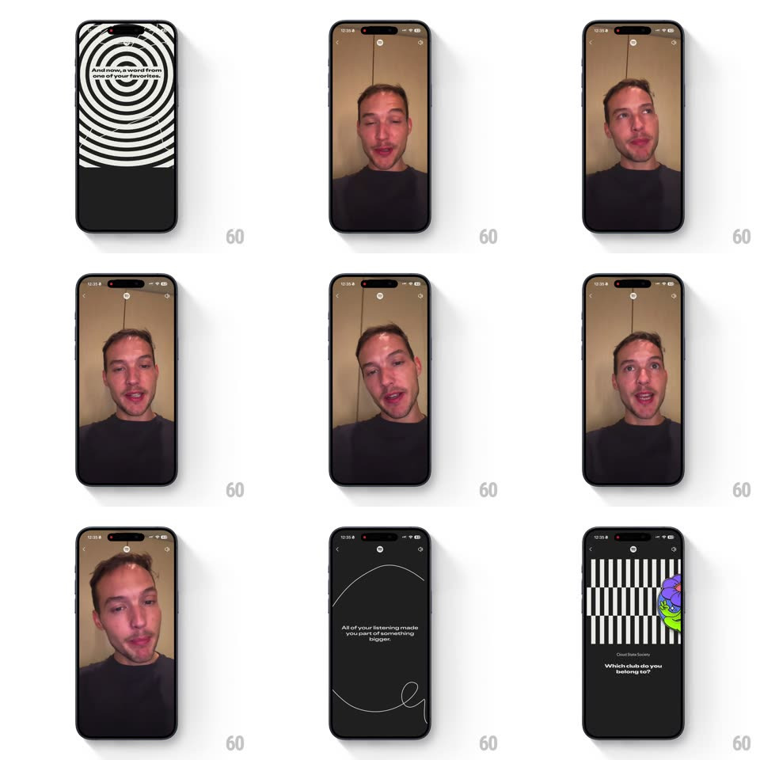

Media
Frame-by-frame

Rebuild this animation 1:1: Spotify Wrapped's artist message - the top-artists list hands off to a full-screen vertical video from your top artist, then returns to the story's closing scenes.

Rebuild this animation 1:1: Spotify Wrapped's artist message - the top-artists list hands off to a full-screen vertical video from your top artist, then returns to the story's closing scenes.
## Integration
Integration: stack-agnostic spec - springs given as stiffness/damping, timed motions as duration + curve; map every value to your framework and animation library of choice.
## Scene
A black "Your top artists" scene: numbered rows (Parra for Cuva, Ben Böhmer, Flawed Mangoes, Dusk Pulse, ...) with thumbs and a Share pill, wrapped in white stripe graphics. Then a near-black buffer beat with a small loading ring. Then the artist's message: a full-screen vertical selfie-style video of the artist speaking, shot handheld in a warm room. Exit scenes: "All of your listening made you part of something bigger." with thin circle line art, then "Which club do you belong to?" over barcode stripes.
## Motion spec
Pattern: story card to full-screen video message and back.
- The artist list builds with a fast stagger (rows up 20px, 60ms apart) and holds until the story timer or a tap.
- The buffer beat: content fades to black (200ms), a small ring spinner turns center-screen (1.2s loop) - short, honest loading, no skeleton theatrics.
- The video scales in from 0.94 with a soft spring (~300/20) as it starts playing - the frame fills edge to edge, story chrome (progress pills, close, mute) floating on top.
- The video plays uncut and letterbox-free; captions/subtitles sit lower-third if provided. A tap toggles mute; the story timer pauses while the video plays.
- On completion (or skip), the video scales back to 0.96 and fades (300ms) as the closing line fades in ("All of your listening made you part of something bigger.", 250ms), its circle art drawing on (stroke reveal, 500ms); the club question follows on the stripes wipe.
## Calibration
- The video is the artist talking to camera - treat it as a person, not content: full-bleed, uncropped, unfiltered.
- The loading beat must be short and plain - a fancy loader would upstage the message.
## Reduced motion
Video fades in/out (300ms) without the scale; line art appears complete.
## Don't miss
- The message is personal because of who it comes from - the transition must feel like the artist walked in, not like a video ad.
- The exit line ("part of something bigger") bridges artist to community - don't cut straight to the club question.